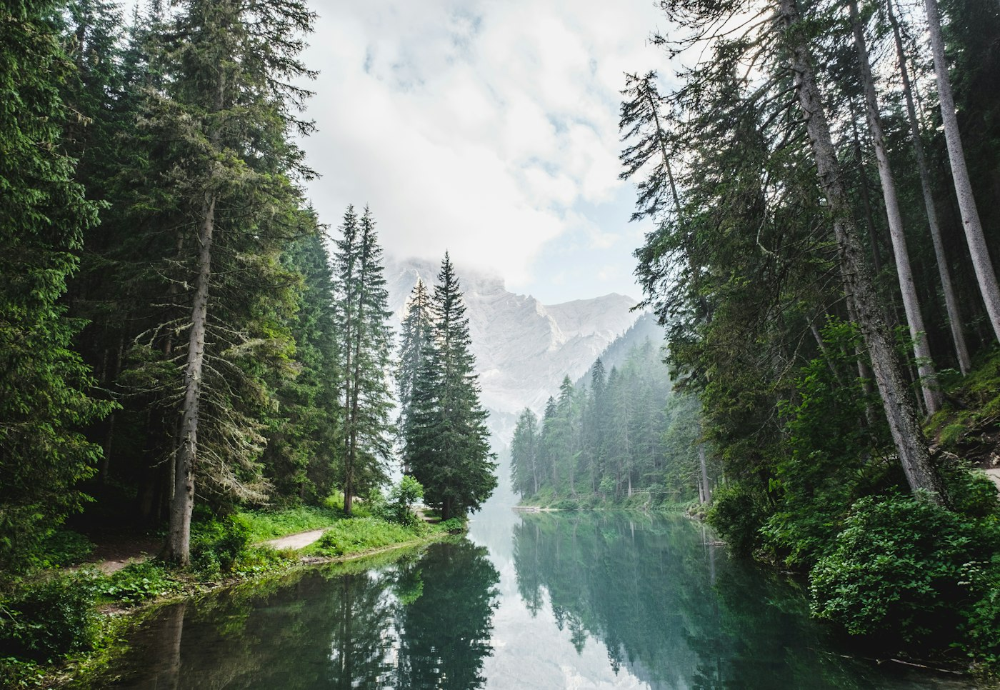
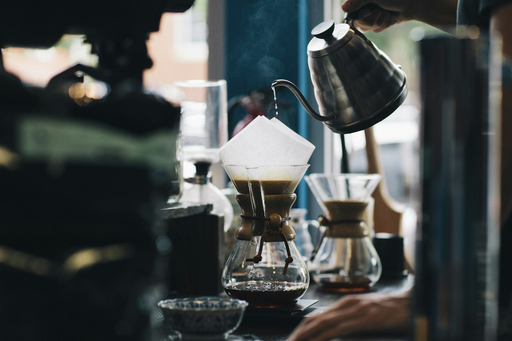

ODIHNĂ LA MUNTE · 24 M²
Cameră dublă standard
Texturi moi, nuanțe naturale și tot spațiul de care ai nevoie pentru o pauză în doi.
Descoperă cameraBRAN–MOIECIU
Camere primitoare, gusturi locale și dimineți cu priveliște, într-un loc în care timpul își schimbă ritmul.
BUN VENIT LA SILVORA HOTEL
Lemnul aduce căldură. Lumina deschide spațiul. Iar liniștea îți face loc să te regăsești.
La SILVORA Hotel, zilele se așază firesc între odihnă, gusturi locale și peisajul Bran–Moieciu. Un loc primitor, pentru lucrurile simple care contează.
Descoperă hotelul

CAMERELE NOASTRE
ODIHNĂ LA MUNTE · 24 M²
Texturi moi, nuanțe naturale și tot spațiul de care ai nevoie pentru o pauză în doi.
Descoperă camera
ODIHNĂ LA MUNTE · 28 M²
Deschide ușa către aerul de munte. Un balcon pentru dimineți tihnite și seri fără grabă.
Descoperă camera
ODIHNĂ LA MUNTE · 34 M²
Mai mult loc pentru tine, cu o zonă de relaxare în care timpul poate să aștepte.
Descoperă camera
RESTAURANT SILVORA
La parter, un restaurant cu 80 de locuri aduce împreună preparate românești reinterpretate și bucuria unei mese fără grabă.
Descoperă restaurantul
ÎN JURUL NOSTRU
În zona Bran–Moieciu, potecile, pădurile și culmile schimbă felul în care privești o zi obișnuită. Ieși la o plimbare, explorează împrejurimile sau rămâi pur și simplu cu privirea spre natură.
Parcare pentru oaspeți.
FRAGMENTE DIN SILVORA



UN ALT RITM. ACEEAȘI STARE DE BINE.